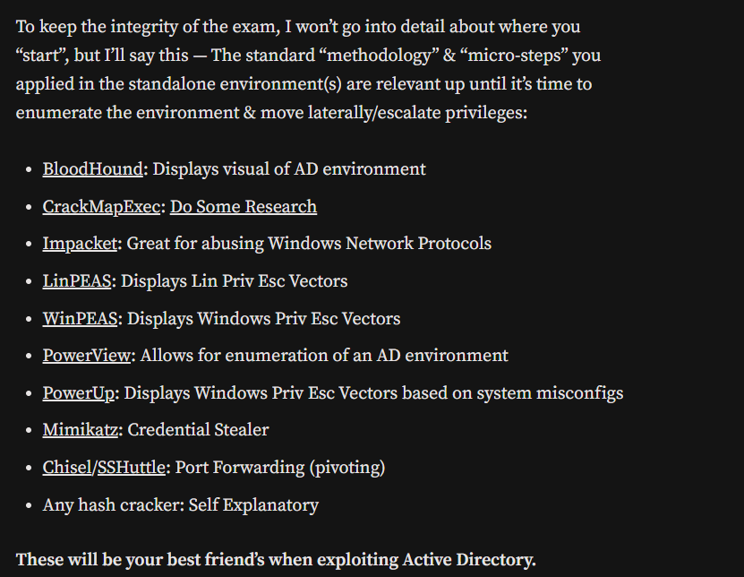

LDAP
(Port 389, 3268 and 636)
SMB
(Port 445)
Kerberost
(Port 88)
https://ethicalhackersacademy.com/blogs/ethical-hackers-academy/active-directory
https://0xsp.com/offensive/red-team-cheatsheet/#Elevation_of_Privileges
